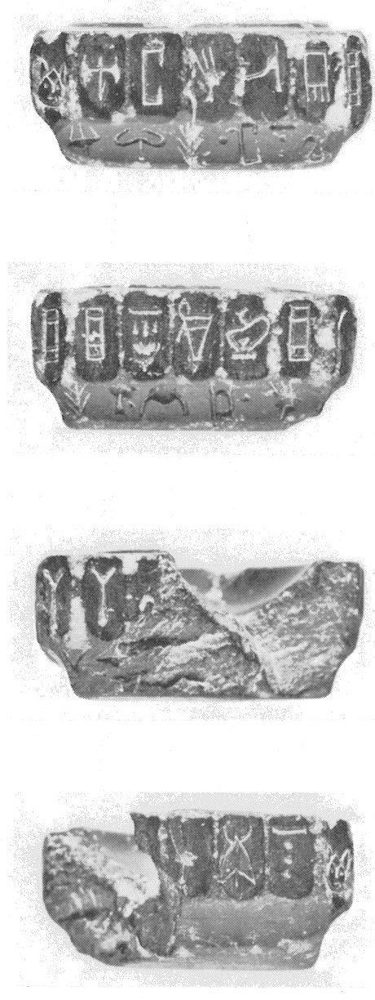
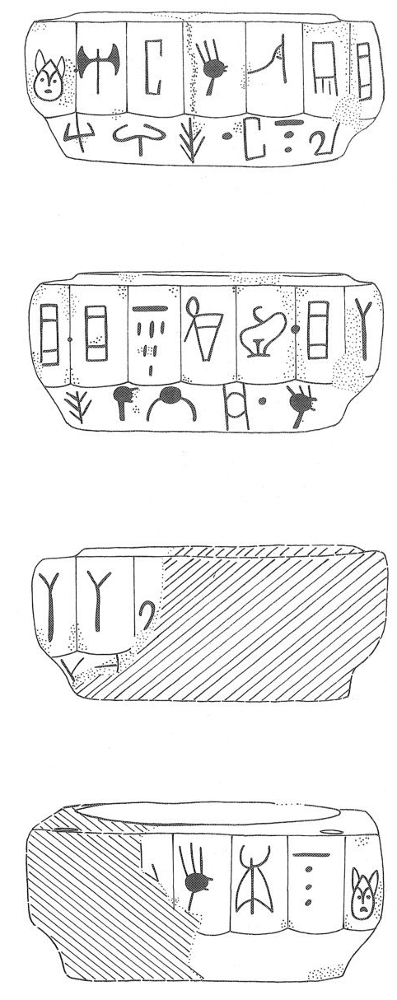

-
IOZa2
Names
Aliases for the inscription.
IOZa2, IO Za 2
Support
Type of Object.
Stone vessel
Location
Site where object was found.
Iouktas
Findspot
Location at Site.
Unavailable


# "Row Index", "Line Index", "Word Index", "Syllabogram", "Status of Reading"
# R L W I S
# 1 0 1 PA certain
1 1 0 A none
1 1 0 TA none
1 1 0 I none
1 1 0 *301 none
1 1 0 WA none
2 1 0 JA none
2 1 1 *900 none
2 1 2 JA none
2 1 2 DI none
2 1 2 KI none
2 1 2 TU none
2 1 3 *900 none
2 1 4 JA none
3 1 4 SA none
3 1 4 SA none
3 1 4 RA none
3 1 4 ME none
3 1 5 *900 none
3 1 6 U none
3 1 6 NA none
4 1 6 KA none
4 1 6 NA none
4 1 6 SI none
4 1 7 *900 none
4 1 8 I none
4 1 8 PI none
4 1 8 NA none
4 1 8 MA none
4 1 9 *900 none
5 2 10 SI none
5 2 10 RU none
5 2 10 TE none
5 2 11 *900 none
5 2 12 TA none
5 2 12 NA none
5 2 12 RA none
6 2 12 TE none
6 2 12 U none
6 2 12 TI none
6 2 12 NU none
6 2 13 *900 none
6 2 14 I none
6 2 15 *900 none
Scribe
Writer of Inscription.
Unavailable
Context
Approximate Date of Inscription.
Unavailable
Dimensions
Height x Length x Thickness.
Catalogue
Museum Reference Number.
Readings
Linear A Transcription
A Linear A transcription with words parsed separately.
Line breaks match the inscription.
𐘇𐘳𐘚𐙕𐘮
𐘱𐄁𐘱𐘆𐘸𐘹𐄁𐘱
𐘞𐘞𐘴𐘋𐄁𐘉𐘅
𐘾𐘅𐘤𐄁𐘚𐘢𐘅𐙁𐄁
𐘤𐘘𐘃𐄁𐘳𐘅𐘴
𐘃𐘉𐘠𐘯𐄁𐘚𐄁
ASCII Transcription
An ASCII transcription with words parsed separately.
Line breaks match the inscription.
ATAI*301WA
JA*900JADIKITU*900JA
SASARAME*900UNA
KANASI*900IPINAMA*900
SIRUTE*900TANARA
TEUTINU*900I*900
Linear A Tabulation
A Linear A transcription with words parsed separately.
Line breaks are logical, e.g. to represent a list.
𐘇𐘳𐘚𐙕𐘮𐘱𐄁𐘱𐘆𐘸𐘹𐄁𐘱𐘞𐘞𐘴𐘋𐄁𐘉𐘅𐘾𐘅𐘤𐄁𐘚𐘢𐘅𐙁𐄁
𐘤𐘘𐘃𐄁𐘳𐘅𐘴𐘃𐘉𐘠𐘯𐄁𐘚𐄁
ASCII Tabulation
An ASCII transcription with words parsed separately.
Line breaks are logical, e.g. to represent a list.
ATAI*301WAJA*900JADIKITU*900JASASARAME*900UNAKANASI*900IPINAMA*900
SIRUTE*900TANARATEUTINU*900I*900
Commentary
IO Za 2
(HM 3557)
(GORILA V: 18-19), square Libation Table, serpentine, with 5
facets per side and one at each corner, making 24 facets in all. Line 1
goes all the way around the Table,
its signs being placed one in a facet, its first sign placed in the first
facet of side a
just after the left corner (whose facet contains the last sign, MA). The
signs of Line 2 do
not go all the way around the table; they start below the beginning of
line 1 and end somewhere on side c or at the beginning of side d; these
signs
are placed more or less below the ridges that divide the facets above.
Line 1, therefore, should contain
24 signs; line 2 contained 13-26 signs. Word divisions in line 1 are on
the ridges separating facets. Holes were drilled part-way
through the corners, perhaps to hold a lid or some vertical attachments
(cf. KN Za 10).
.1:
A-TA-I-*301-WA-JA
• JA-DI-KI-TU • JA-SA-SA-RA[-ME • U-NA-KA-NA-]SI [•]
I-PI-NA-MA •
.2: SI-RU-TE • TA-NA-RA-TE-U-TI-NU •
I-•-•[

Line 1 has all signs perfectly placed. Line
2 is problematic, but probably ended with a word of 6 signs, the first of
which is I- (for the second sign, GORILA reads DA, but it could be
something else). In the attached illustration, JGY hypothesizes a
word-divider on side d between -NA-SI • and I-PI-NA-; on the other
sides word-dividers are placed exactly in the center of the ridges
dividing the niches. On side d, the 3rd ridge from the left corner is
preserved well enough that it is possible that it carried no word-divider.
Commentary © John Younger
References
papers/GORILA-Vol5.pdf#page=71